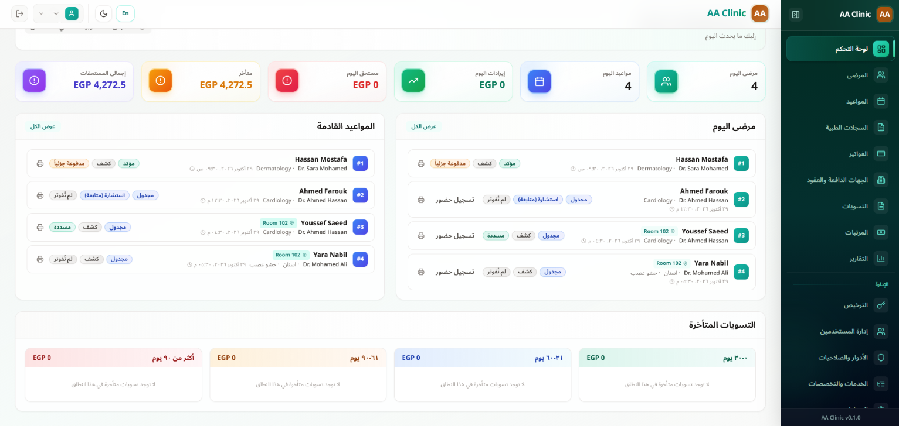

AA Clinic برنامج لإدارة العيادات يعمل على جهازك، ويناسب مختلف التخصصات وأحجام العيادات.

قاعدة بيانات محلية قوية داخل جهاز العيادة، فلا يتعطل عملك عند انقطاع الإنترنت، واستجابته لحظية.
السجلات الطبية والحسابات محفوظة داخل جهازك فقط، ولا تُرفع على أي خوادم خارجية.
شغّله على جهاز واحد أو اربط الاستقبال وغرف الكشف والمحاسب والمدير عبر الشبكة المحلية.
6 مؤشرات في نظرة واحدة: مرضى اليوم، مواعيد اليوم، إيرادات اليوم، مستحق اليوم، المتأخرات، وإجمالي المستحقات.
يفرّق تلقائيًا بين كشف جديد واستشارة، ويطبّق سعر الاستشارة أو مجانيتها حسب سياسة كل تخصص دون خطأ بشري.
أضف أي تخصص أو غرفة أو خدمة بضغطة +، مع تسعير ومدة لكل خدمة، وحماية للفواتير القديمة عند تعديل الأسعار.
البيانات والتاريخ المرضي والحساسية والزيارات والفواتير والمرفقات في شاشة واحدة منظمة.
قوالب مخصصة لكل تخصص: عام، أسنان (مع مخطط الأسنان)، أطفال، علاج طبيعي، مع كتابة الروشتات.
نقدي وبطاقة وتحويل بنكي وشيك، مع تتبع المدفوعات الجزئية والكلية.
سجّل شركات التأمين والنقابات والشركات المتعاقدة، وأدر نسب التغطية والخصومات والمطالبات والتسويات.
تقسيم تلقائي للمستحقات المتأخرة إلى 0-30 و31-60 و61-90 وأكثر من 90 يومًا لمتابعة التحصيل.
رواتب ومكافآت وخصومات وسلف لكل الموظفين، وحساب نسب الأطباء وسجل صرف وتسويات دقيق.
مدير النظام والمدير والطبيب والمحاسب والاستقبال، مع تحكم بالإنشاء والقراءة والتعديل والحذف في كل وحدة.
كل عملية حساسة مسجّلة: من نفّذها ومتى وما الذي تغيّر، لشفافية كاملة داخل العيادة.
إذا نسي أحد الموظفين كلمة المرور، يعيد المدير تعيينها في لحظات، ويختار الموظف كلمة جديدة خاصة به.
يعتمد البرنامج على قاعدة بيانات قوية تحفظ سجلات العيادة بشكل منظم ومستقر، وتدعم نمو بياناتك مع الوقت.
نسخة كاملة عند فتح البرنامج، مع حفظها على قرص آخر واستعادة أي نسخة بضغطة زر.
اسم العيادة وشعارها، ودعم العربية والإنجليزية، والوضع الفاتح والليلي، وتقارير مالية وإدارية.
فترة تجريبية تلقائية بكامل المزايا دون مفتاح، وبياناتك تبقى كما هي عند الترقية.
نزّل ملف التثبيت من الزر أعلاه.
شغّل الملف واتبع شاشة التثبيت.
أكمل إعداد العيادة، وتبدأ فترة تجريبية 14 يومًا تلقائيًا.
هذا يحدث مع البرامج الجديدة. اضغط «مزيد من المعلومات» ثم «تشغيل على أي حال». يمكنك أيضًا فحص الملف على VirusTotal (ضع الرابط هنا).
لا. يعمل البرنامج بالكامل داخل العيادة بدون إنترنت، حتى على شبكة محلية بين عدة أجهزة.
حمّل أحدث إصدار من هذه الصفحة وثبّته فوق القديم. بياناتك محفوظة في مسار مستقل ولا تتأثر بالتحديث.
نعم، 14 يومًا مجانًا بكامل المزايا، وتبدأ تلقائيًا بعد إعداد العيادة. عند الترقية تبقى كل بياناتك كما هي.
يأخذ البرنامج نسخة احتياطية يوميًا تلقائيًا، ويمكنك حفظها على قرص آخر أو فلاشة واستعادتها بضغطة زر.